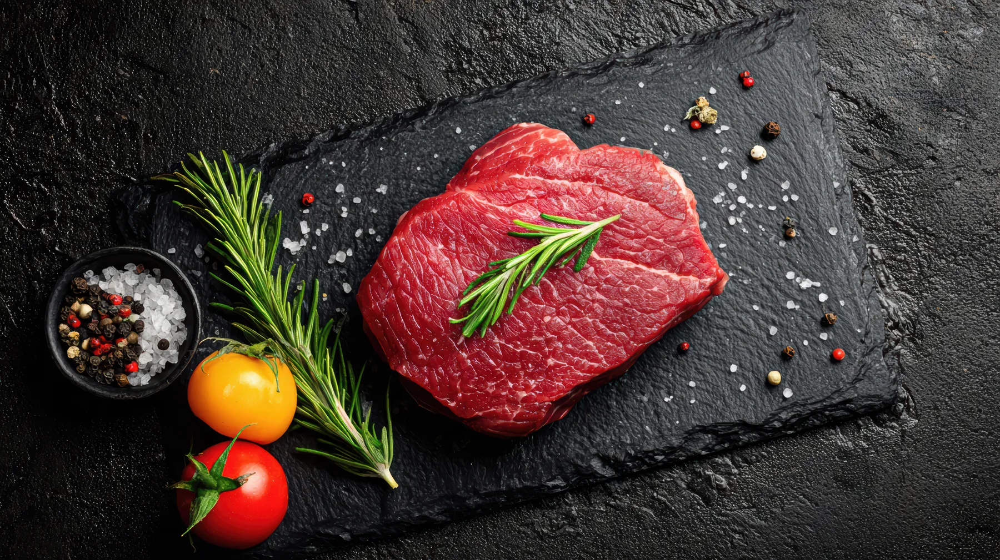
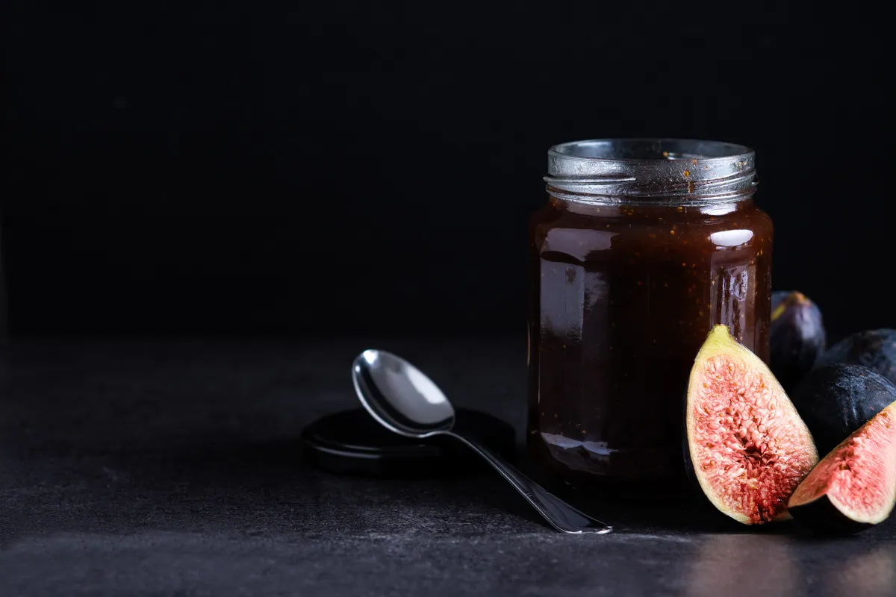

Non devi sapere che taglio chiedere. Mettiamo insieme noi la roba giusta, già porzionata, con le dosi che servono. Tu accendi il fuoco.
 Per otto
Per ottoArrosticini, salsicce e spiedini per una tavolata da otto. Arriva porzionata e pronta da mettere sul fuoco: nessuno deve tagliare niente, si mangia e basta.
Se non ci conosci, parti da qui. Un assaggio di tutto: un taglio da arrosto, il macinato per gli hamburger, gli arrosticini, e una conserva di casa per capire da dove veniamo.

Se non ci conosci
Col timbroConserve, sottoli e un pensiero di carne, chiusi col nostro timbro e la spunta a mano. Un regalo che sa di casa, per chi è lontano o per chi ti sta a cuore.